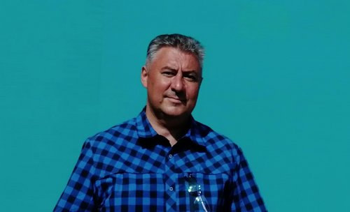
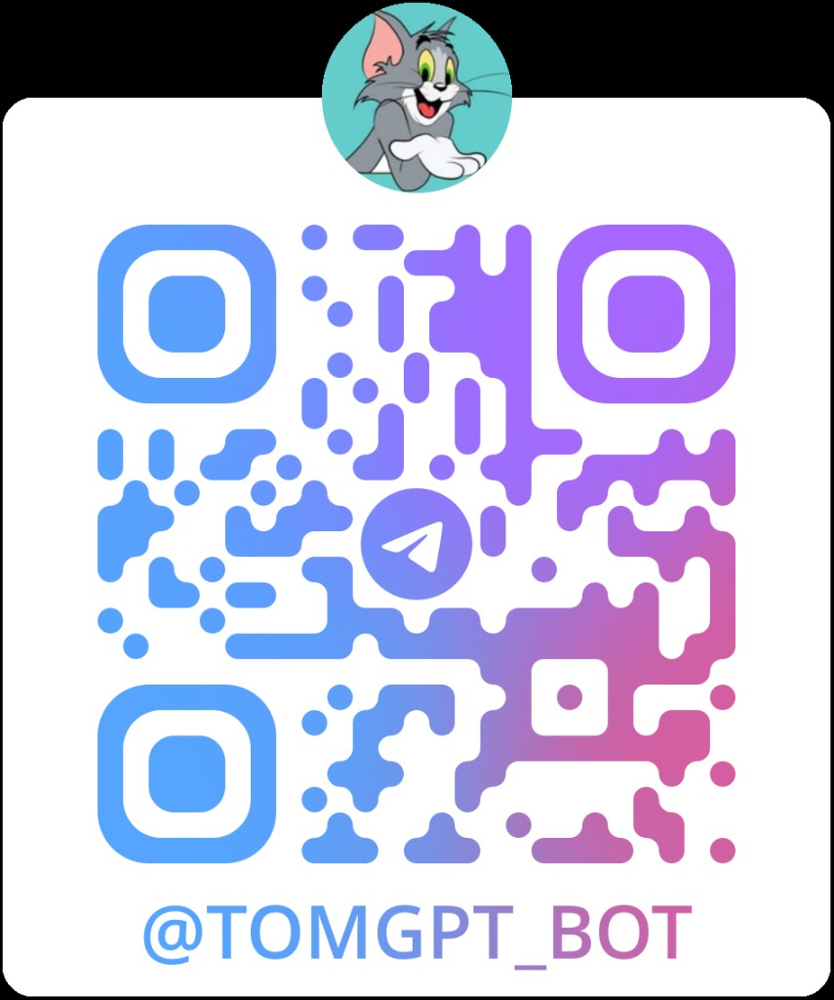
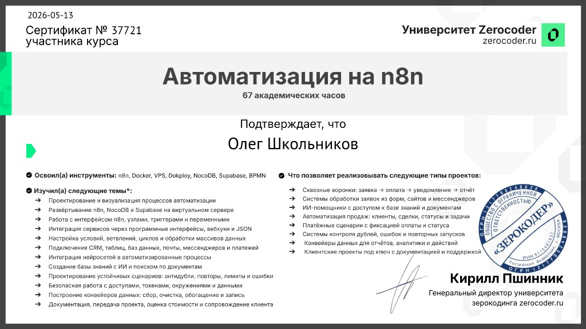
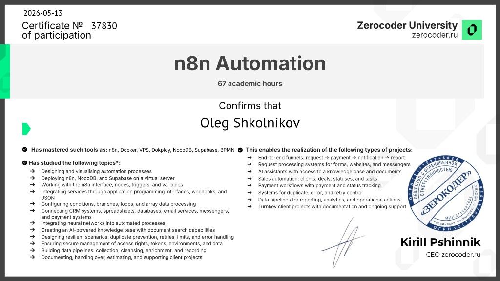
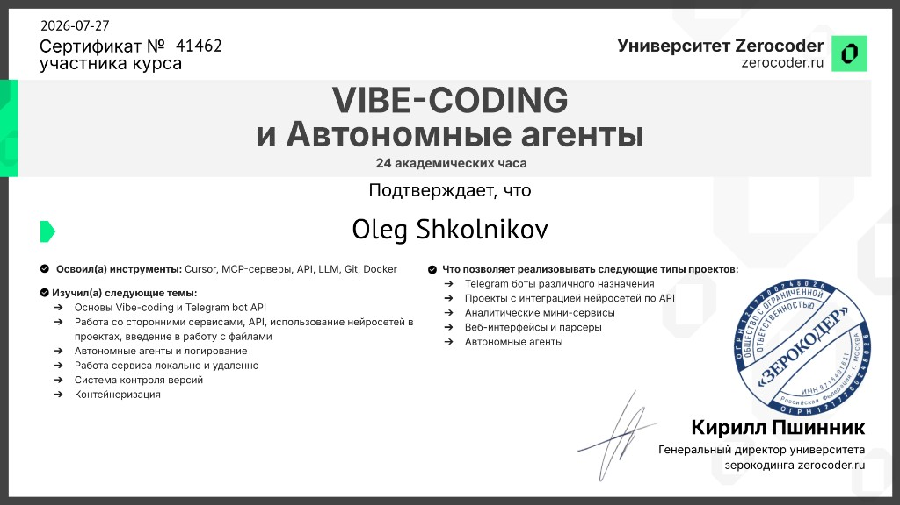

Екатеринбург · ИИ и управление проектами
Школьников
Олег
Руководитель проектов · автоматизация с ИИ
30 лет в управлении сложными программами — и новый фокус на практическом применении искусственного интеллекта: n8n, Cursor, API, SQL и нейросети для автоматизации процессов и цифровой трансформации бизнеса.

Сейчас изучаю
ИИ · n8n · Cursor
Обо мне
Стратегия, команда и результат
Совмещаю 30-летний опыт управления федеральными проектами с практическим освоением инструментов ИИ. Прохожу обучение в Zerocoder University: автоматизация с нейросетями, n8n, работа с API и SQL, vibe-coding в Cursor.
Моя цель — не просто «пользоваться ChatGPT», а выстраивать рабочие автоматизации: от идеи и ТЗ до работающего решения. Умею формулировать задачи для разработки, контролировать результат и внедрять цифровые инструменты в реальные процессы.
Параллельно — богатый бэкграунд в телекоме и IT: B2F-проекты для X5, ЛУКОЙЛ, Сбербанка, Газпромнефти, РЖД; VPN-сети, GR, управление командами до 15 человек.
Навыки
ИИ и автоматизация — в центре
Практические навыки, которые развиваю прямо сейчас, и управленческая база за 30 лет.
Искусственный интеллект и автоматизация
Управление проектами
Бизнес и коммуникации
Отраслевой опыт
Проекты
Автоматизация и ИИ в продакшене
Личный проект «Жизнь по проекту», корпоративная автоматизация в ЭР-Телеком и Telegram-бот с нейросетью.
Личный проект · Vibe-coding
2026
Жизнь по проекту. Проект №60
Открытая экосистема семейных решений: мы строим дом и одновременно сохраняем историю жизни и принятых решений — чтобы через годы помнить не только что произошло, но и почему именно так. Сайт с хроникой событий, летописью, формой обратной связи и чат-ботом в MAX.
Посмотреть →- Хроника строительства и семейных событий с фото и текстом
- Летопись проекта и система управления документами (DIA, DEC, STD)
- Форма обратной связи, чат-бот и личные сообщения в MAX
- AI-секретарь проекта на CrewAI для документооборота и поручений
Выпускной проект · n8n
2026
Автоматизация планирования работ — ЭР-Телеком
Выпускной проект Zerocoder для Направления по управлению федеральными проектами. Ежедневно в 08:00 (МСК) система выбирает из PostgreSQL заказы «В исполнении», группирует их по руководителям проектов, формирует Excel-план работ и отправляет на email руководителям проектов. После рассылки — сводное уведомление в мессенджер.
- Расписание n8n + SQL-запросы к базе заказов клиентов
- JavaScript-группировка данных и генерация XLSX
- Персональные письма с вложением и итоговой статистикой
- Интеграция с Green-API для контроля выполнения рассылки
Telegram · ИИ
2026
TomGPT — чат-бот в Telegram
AI-ассистент в образе умного кота Тома: отвечает на вопросы пользователей через GPT-4o-mini, ведёт историю диалогов в NocoDB и уведомляет администратора о новых обращениях. Собран на n8n как связка Telegram + HTTP API + база данных.
Посмотреть →
- Telegram Trigger и отправка ответов пользователю
- OpenAI API через ProxyAPI с системным промптом
- Логирование вопросов и ответов в NocoDB
- Уведомления администратору о новых сообщениях
Другие проекты
Выпускной проект · Vibe-coding
2026
Генератор постов для соцсетей
Агент по URL веб-страницы: загружает HTML, извлекает текст через BeautifulSoup и генерирует короткий пост для соцсетей в заданном стиле с помощью OpenAI API. FastAPI-бэкенд, React-интерфейс, деплой в Docker на VPS.
Посмотреть →
Веб-приложение · ИЖС
2026
Кредитный калькулятор — строительство дома
Веб-калькулятор аннуитетного кредита на строительство частного дома: бегунки для стоимости, взноса, срока и ставки, мгновенный пересчёт платежа, график с разбивкой на основной долг и проценты, выгрузка расчёта в Excel.
Посмотреть →
Веб-приложение
2026
СНТ «Ясень» — календарь председателя
Веб-сервис для председателя садового товарищества: интерактивный календарь событий, CRUD-операции, адаптивный интерфейс для телефона и автоматическая рассылка еженедельных напоминаний на почту.
Посмотреть →
Лендинг
2026
УралДом — сайт строителя
Одностраничный лендинг для специалиста по малоэтажному строительству и ландшафтному дизайну в Уральском регионе: hero-блок, портфолио, контакты, анимации и форма заявки.
Посмотреть →
Веб-приложение
2026
Каталог туров по Санкт-Петербургу
Каталог туров по Санкт-Петербургу и региону: карточки с фото и программой, рейтинг пользователей, интеграция с API MyPeterburg. Развёрнуто на VPS с Gunicorn и nginx.
Посмотреть →
Презентация
2026
АконсТранс — сравнительный анализ контрагентов
Интерактивная HTML-презентация для строительной компании: оценка четырёх поставщиков светотехники и смежной продукции, сверка данных из открытых источников, рейтинг партнёров для объектов ЖД и инфраструктуры. Фирменный стиль aconstrans.ru, 10 слайдов.
Посмотреть →Опыт работы
От инженера до руководителя федеральных проектов
ЭР-Телеком Холдинг
Екатеринбург · ertelecom.ru · телеком, системная интеграция
Руководитель направления по управлению федеральными проектами
- Развитие B2F-направления федеральных проектов «с нуля», управление портфелем для крупных заказчиков по РФ.
- Создание структуры направления, выстраивание бизнес-процессов, методология управления проектами.
- Руководство территориально распределённой командой руководителей проектов (15 человек): подбор, обучение, мотивация, делегирование.
- Комплексное управление реализацией: координация на всех этапах, контроль сроков, качества и изменений.
- Организация VPN-сети для ~200 АЗС и Нефтебаз Газпром-нефть в 10 регионах Сибири и Урала.
- Успешная организация работы с клиентами: ГК РЖД, X5-Retail, ЛУКОЙЛ, Бест-Прайс, ВТБ 24, Сбербанк и др.
Карьерный рост: руководитель отдела (2012–2014) → региональный директор (2014–2015).
Прософт-Системы
Екатеринбург · prosoftsystems.ru
Менеджер проекта
- Реализация проекта реконструкции здания Филиала ОАО «СО ЕЭС» в Екатеринбурге.
- Организация поставок, монтажа, ПНР по оборудованию связи, СКС, ЛВС, видеонаблюдению.
- Координация подрядчиков, работа с отделом закупок и логистикой.
Транском
transcom-ur.ru
Заместитель генерального директора
- Создание компании «с нуля»: «Автоматизированный автодром» — инновационный проект.
- Финансово-экономическое, административно-хозяйственное и коммерческое руководство.
- Формирование и развитие команды (10+ человек), GR и коммуникации с партнёрами.
- Идея проекта одобрена на уровне ГИБДД; построены автодромы в Кургане и Екатеринбурге.
ЗАО «Горизонт»
Екатеринбург · строительство
Коммерческий директор
- Коммерческий бизнес в области строительства объектов автоматики, телемеханики и связи на ж/д транспорте.
НПЦ Промэлектроника
Екатеринбург · npcprom.ru
Начальник отдела внедрения
- Управление проектами внедрения систем счёта осей на сети ж/д в РФ, Казахстане, Узбекистане.
- Коммуникации с заказчиками, участие в выставках, продвижение продукта.
- Координация филиалов, управление командой инженеров (5 человек).
- Обеспечение системы на 15 магистральных ж/д в РФ.
Магнитогорский металлургический комбинат
Магнитогорск · mmk.ru
Начальник участка / Старший электромеханик
- Организация работы участка сигнализации централизации и блокировки (СЦБ) на ж/д транспорте ОАО «ММК».
- Обслуживание устройств автоматики, телемеханики и связи.
Карьерный рост: электромонтёр СЦБ (1996–1997) → старший электромеханик / начальник участка (1997–2002).
Сертификаты
Zerocoder University — n8n
67 академических часов. Инструменты: n8n, Docker, VPS, Dokploy, NocoDB, Supabase, BPMN.

13.05.2026 · № 37721
Сертификат об окончании
Курс «Автоматизация на n8n». Проектирование процессов, деплой на VPS, API-интеграции, ИИ в автоматизациях, пайплайны данных.

13.05.2026 · № 37830
Сертификат об участии
Курс «n8n Automation». Сценарии автоматизации, CRM и мессенджеры, AI-ассистенты с базой знаний, обработка ошибок и документирование проектов.
Zerocoder University — Vibe-Coding
24 академических часа. Инструменты: Cursor, MCP-servers, API, LLM, Git, Docker.

27.07.2026 · № 41462
Сертификат об окончании
Курс «Vibe-Coding и Автономные агенты». Основы vibe-coding и Telegram Bot API, интеграция нейросетей, автономные агенты, деплой локально и на VPS, Git и контейнеризация.
Образование и курсы
Инженерная база и непрерывное развитие
Екатеринбургское суворовское ВУ
Общее образование.
КВВИДКУС
Киевское высшее военное училище связи. Автоматизация систем связи.
УрГУПС
Электротехнический факультет. Автоматика, телемеханика и связь на железнодорожном транспорте.
Менеджмент
Управление ресурсами — МИМ ЛИНК. The effective manager — The Open University.
ИСО 9001:2000
Подготовка руководителей по стандарту. ЗАО «ТКБ Интерсертифика».
Курс управления проектами
Учебно-консультационный центр «Проектная практика».
ЭР-Телеком
Система управления проектами ЭРТХ в соответствии с PMBOK 7.
Zerocoder University
Автоматизация на n8n — 67 ак. часов. Сертификаты об окончании и об участии.
Zerocoder University
Vibe-Coding и автономные агенты — 24 ак. часа. Сертификат об окончании.
Контакты
Готов к новым проектам
Формат работы: на месте работодателя, удалённо. Полная или частичная занятость, проектная работа / разовое задание.
Телефон
+7 (912) 265-03-05
Email
npcprom@mail.ru
Telegram
@Oleg_Shkolnikov
Локация
Екатеринбург, Россия